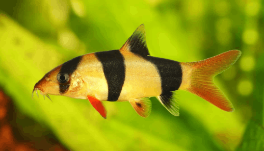
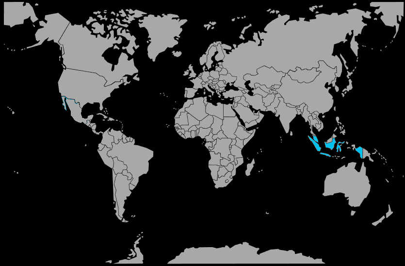

Systématique
- Ordre : Cypriniformes
- Famille : Botiidae
- Genre : Chromobotia
- Espèce : Chromobotia macracanthus

Chromobotia macracanthus, la loche clown, est une grande loche asiatique très populaire en aquariophilie, pouvant dépasser 25 à 30 cm en captivité et plus de 30 cm dans la nature.
Son corps orange vif barré de trois larges bandes noires et ses nageoires souvent bordées de rouge en font un poisson très attractif, mais dont la taille adulte et la longévité importante demandent un aquarium de grand volume.
La loche clown est une espèce grégaire qui doit être maintenue en groupe (au moins 4 à 5 individus) pour limiter le stress et permettre la mise en place d’une hiérarchie naturelle.
Active surtout au crépuscule et la nuit, elle passe la journée à se cacher sous les racines, dans les cavités et entre les décors, et peut émettre des claquements audibles liés à ses interactions sociales.
Globalement pacifique avec les poissons de taille suffisante, elle peut cependant intimider de petites espèces et fouiller intensément le substrat, ce qui n’est pas compatible avec les plantes fragiles et les sols très légers.
Mode : ovipare; la reproduction en aquarium d’amateur n’est pas maîtrisée et les poissons du commerce proviennent très souvent de captures sauvages ou, plus rarement, de reproductions induites en pisciculture.
Dans la nature, l’espèce effectuerait des migrations saisonnières vers les zones inondées pour frayer en bancs, en profitant de la montée des eaux, ce qui est très difficile à reproduire en captivité.
Aucun protocole simple de reproduction domestique n’est disponible pour l’instant; l’espèce doit donc être considérée comme non reproductible en aquarium classique et choisie en connaissance de cause.
Dimorphisme sexuel : peu marqué; les femelles adultes tendent à être un peu plus trapues que les mâles, surtout vues de dessus, mais la distinction reste délicate en dehors de très grands sujets.
Espérance de vie : Chromobotia macracanthus peut vivre 20 à 30 ans, voire davantage, dans un aquarium adapté, ce qui en fait un engagement à très long terme pour l’aquariophile.
L’espèce fréquente les rivières et affluents à courant modéré de Sumatra et de Bornéo, ainsi que les plaines inondables saisonnières, où elle se rassemble en grands groupes.
Le substrat y est généralement sablonneux ou composé de graviers fins, parsemé de roches, de racines et de branches, avec une végétation aquatique variable et une eau chaude, bien oxygénée.
Répartition

Origine naturelle :
- Île de Sumatra (bassin du fleuve Musi et autres systèmes fluviaux).
- Île de Bornéo (principalement Kalimantan indonésien).
L’espèce n’est pas naturellement présente en dehors de ces îles, mais est largement exportée pour l’aquariophilie et parfois menacée localement par la surexploitation et la dégradation des habitats.
Paramètres de maintenance
Température : 25 à 30 °C.[web:156]
pH : 6,0 à 7,5, de légèrement acide à neutre.
GH : 5 à 15 °dGH, eau douce à moyennement dure.
Courant : modéré, avec une filtration puissante et une bonne oxygénation; la présence de zones de repos à courant plus faible est recommandée.
Volume conseillé : au minimum 500 à 600 L pour un groupe de jeunes, et plus de 800 à 1 000 L à long terme pour des adultes, avec une grande longueur de façade.
Régime alimentaire
Régime : omnivore à dominante carnivore; dans la nature, la loche clown consomme des invertébrés benthiques (vers, mollusques, crustacés), des insectes et divers organismes vivant sur ou dans le substrat.
En aquarium, elle accepte volontiers les comprimés de fond, granulés coulants, légumes pochés (courgette, concombre) et nourritures congelées ou vivantes (vers de vase, artémias, moules, crevettes hachées).
Il est important de varier la nourriture et de veiller à ce que les loches reçoivent leur part au fond du bac, surtout en présence de poissons de pleine eau rapides qui monopolisent la distribution.